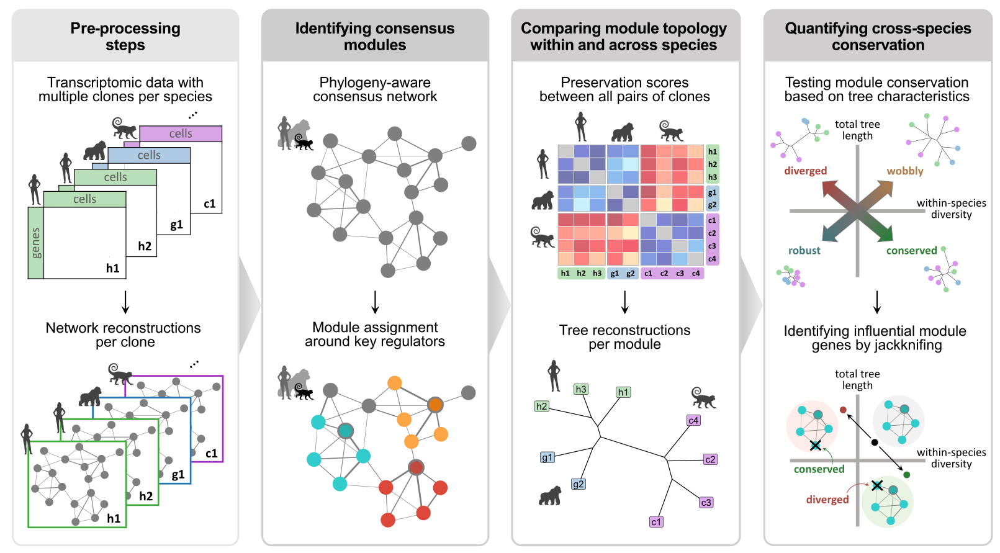

CroCoNet is a tool to quantitatively compare gene regulatory networks across species and identify conserved and diverged modules. It hinges on contrasting module variability within and across species in order to distinguish between-species divergence from confounding factors such as diversity across individuals, environmental differences and technical noise.

The main steps of the CroCoNet workflow
⬇️ Installation
For the installation, the R package devtools is needed.
install.packages("devtools")
library(devtools)Once devtools is available, you can install the development version of CroCoNet and all its dependencies from GitHub with:
devtools::install_github("Hellmann-Lab/CroCoNet")📖 User Guide
For a step-by-step guide and detailed explanations, please check out the vignette on the analysis of an example scRNA-seq dataset:
browseVignettes("CroCoNet")You can access this vignette and the documentations of all functions also at the CroCoNet website.